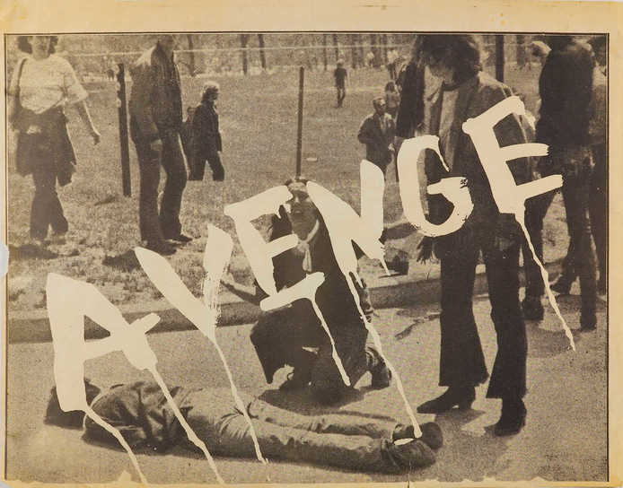
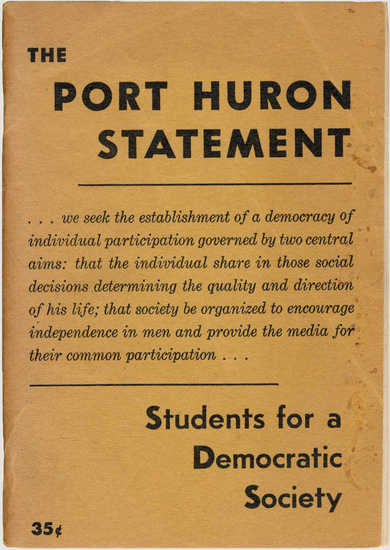
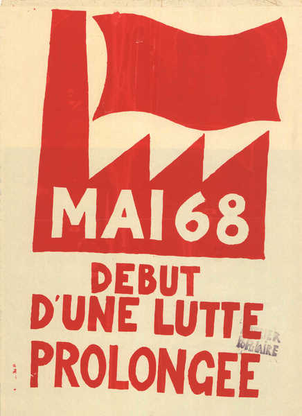

WALKOUT
A BRIEF HISTORY OF
STUDENT ORGANIZING
STUDENT ORGANIZING
Interference Archive
About
Donate
WALKOUT: A BRIEF HISTORY OF STUDENT ORGANIZING

May 2020 marked the 50th anniversary of the Kent State and Jackson State massacres, which set off a historically large-scale student strike across the nation. With the anniversary as an entry point and frame of reference, Walkout: A Brief History of Student Organizing uses archival material from the Interference Archive collection—posters, buttons, pamphlets, flyers, zines, and more—to examine the broader scope of student movements that both led up to and followed those of May 1970.
Super long caption that can take a huge amount of space we don't have
Though there have been student protests in the United States for nearly as long as there have been students, it was not until post-World War II that student movements made critical gains in numbers, and in turn, power. The postwar period was marked by expanded access to higher education, which gave rise to the expansion of youth culture. Beginning in 1947, the G.I. Bill increased the number of students in American colleges to 2.3 million, a 50% increase from pre-war enrollment. The prosperity of the post-war economy increased participation in higher education, with the baby boomers further tripling college enrollment in the 1960s. As the number of students with increased spending power grew, American consumerism catered to the new demographic, giving youth expanded clout. The advent of modern youth culture manifested itself via rock and roll, fashion, and student protest — intertwined forces often in dialogue together.
At the same time, Black G.I.s who had fought to promote democracy and erase racism around the world returned to find that they could not realize those ideals at home, thus catalyzing the civil rights movement. Generations of Americans coming of age after WWII looked at the destruction and inequality — wrought by the World Wars, Jim Crow laws, Nuclearization, Cold War détente, colonization, and capitalism — and sought a new direction.

Caption
Student organizing emerged as the avenue through which postwar generations could participate and critique in cultural dialogue — in so becoming voices of change. It can be argued that the first major action of the modern student protest movement came in 1957, when the Little Rock Nine desegregated Little Rock Central High School in the face of mob violence. Soon after, North Carolina Agriculture and Technical State University students led the Greensboro Lunch Counter sit-ins, which led to the 1960 formation of the Student Non-Violent Coordinating Committee (SNCC). That same year, Students for a Democratic Society (SDS) was born. In 1962, the SDS issued its Port Huron Statement manifesto, listing racial inequality and Cold War militarization as the primary issues facing modern society.

Caption
From its roots in the changes wrought by World War II through the civil rights and anti-war movements of the 1960s, Walkout traces major themes that led American students to strike in 1970 and that have propelled them since, with reference to international movements that influenced tactics and issues for agitation. Of significant note is how the graphic production of these movements helps us trace their impact across generations. Walkout showcases visual material from student art collectives that communicating their demands, including the Atelier Populaire (Paris, 1968), Poster Factory (Wisconsin, 1970), WIMP Collective (New York, 1970), Sublevarte Colectivo (Mexico, 1999), and École de la Montagne Rouge (Montreal, 2012). Walkout’s presentation of protest culminates in the recent protests for gun control and climate justice, and in the Boycott, Divestment, and Sanctions movement against Israel in so examining the legacy of postwar student organizing from inciting action through the present day.
The materials on display reflect the holdings of Interference Archive and are in no way encyclopedic in scope, but are instead a sampling of the textual and visual culture of student organizing. Viewable now as an digital exhibition, Walkout will open at a later date as a physical exhibition at Interference Archive.